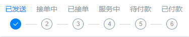
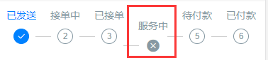
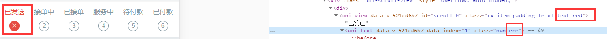
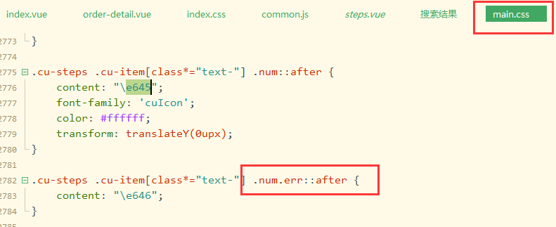

<scroll-view scroll-x class="bg-white padding response cu-steps steps-bottom" :scroll-into-view="'scroll-' + scroll"
scroll-with-animation>
<view class="cu-item padding-lr-xl" :class="index>scroll?'':'text-blue'" v-for="(item,index) in 10" :key="index" :id="'scroll-' + index">
Level {{index + 1}} <text class="num" :data-index="index + 1"></text>
</view>
</scroll-view>cuIcon-roundclosefill，一旦我替换num属性就变成这样了，之后可能还要不断去调整样式
<view class="cu-item padding-lr-xl" :class="item.status>step.scroll?'':item.isErr?'text-red':'text-blue'" v-for="(item,index) in 10" :key="index" :id="'scroll-' + index">
Level {{index + 1}} <text class="num err" :data-index="index + 1"></text>
</view>
